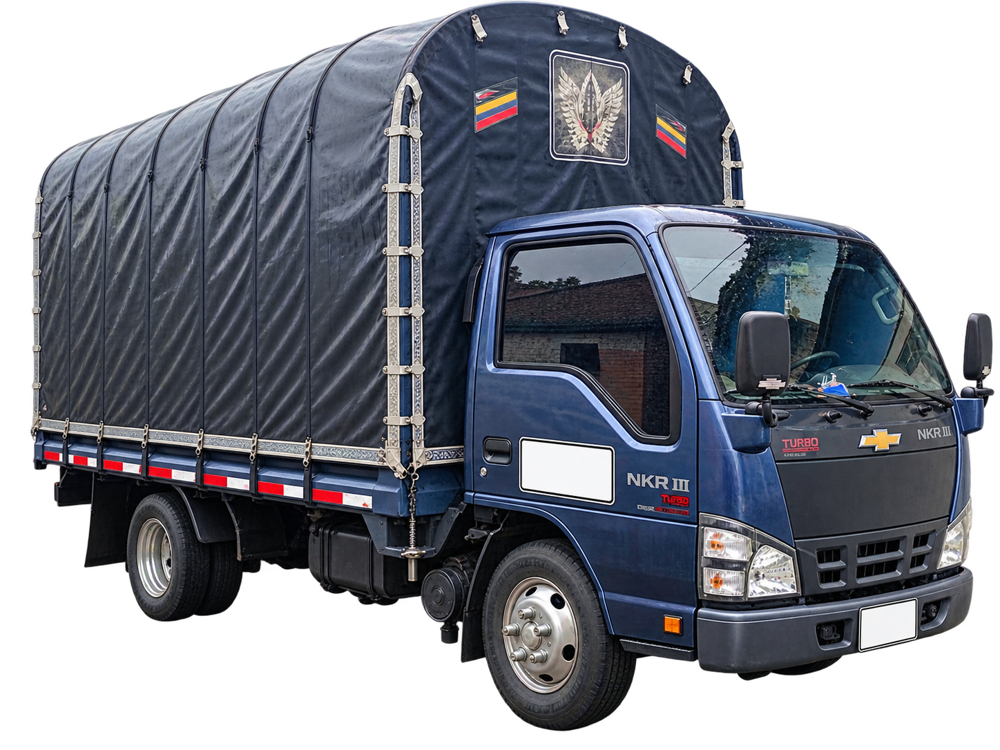
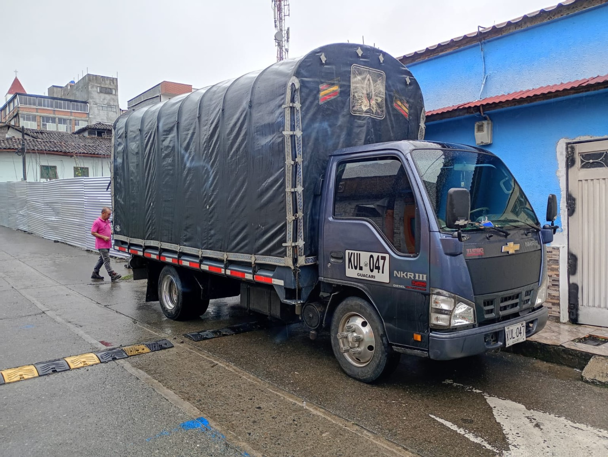

01 / LOCAL
Jamundí
Transporte de carga dentro de Jamundí y sus alrededores, de acuerdo con la ruta y las condiciones del servicio.
TRANSPORTE DE CARGA · VALLE DEL CAUCA
Soluciones de transporte para personas y negocios en Jamundí, Cali y diferentes destinos del país.

Experiencia al volanteMás de 10 años de experiencia
Atención responsableTrato serio y comunicación directa
Alcance flexibleJamundí, Cali y rutas nacionales
NUESTROS SERVICIOS
Coordinamos cada servicio según el tipo de mercancía, el destino y la disponibilidad del vehículo.
Transporte de carga dentro de Jamundí y sus alrededores, de acuerdo con la ruta y las condiciones del servicio.
Traslados de mercancía entre Jamundí, Cali y otros municipios del Valle del Cauca.
Posibilidad de atender destinos en otras zonas del país, previa confirmación de carga, recorrido, horarios y disponibilidad.
*La aceptación de cada carga depende de sus dimensiones, peso, condiciones de transporte, ruta y disponibilidad.

CAPACIDAD Y EQUIPO
Contamos con un Chevrolet NKR de carga, con carrocería tipo estacas y cubierta con carpa. Su configuración permite atender diferentes necesidades de transporte, siempre verificando previamente las características de la mercancía.
TRANSPORTES JOSÉ LUIS
Detrás de Transportes José Luis está: José Luis Castro, propietario y conductor del vehículo, una persona que cuenta con más de 10 años de experiencia al volante, especialmente en el transporte de carga.
Su trabajo se basa en la responsabilidad, el trato serio y la coordinación directa con cada cliente. Antes de confirmar un servicio, se revisan las condiciones de la carga, el recorrido y los horarios para ofrecer una atención clara desde el inicio.
HABLEMOS DE TU CARGA
Comparte los datos básicos y prepara una solicitud para enviarla por WhatsApp. La cotización y disponibilidad se confirman directamente.